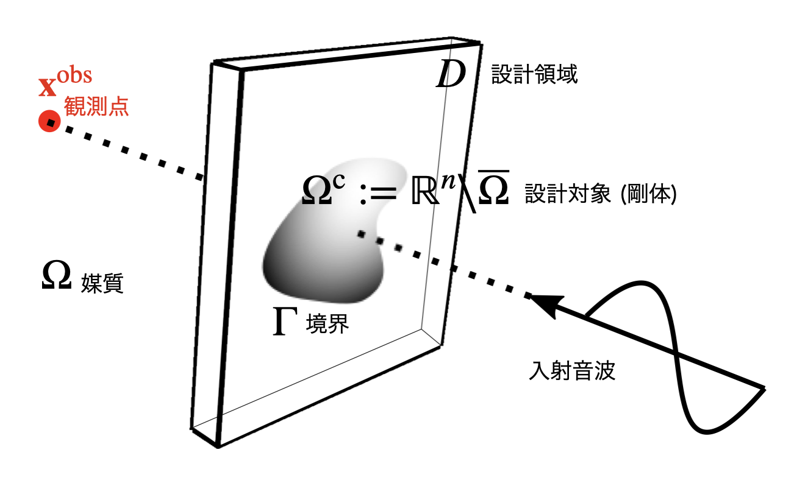
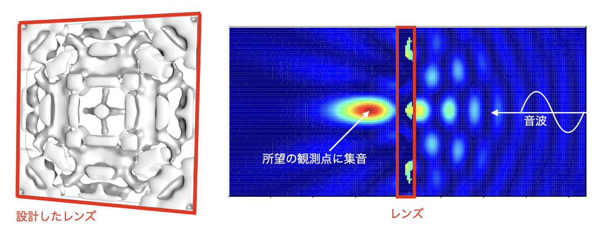
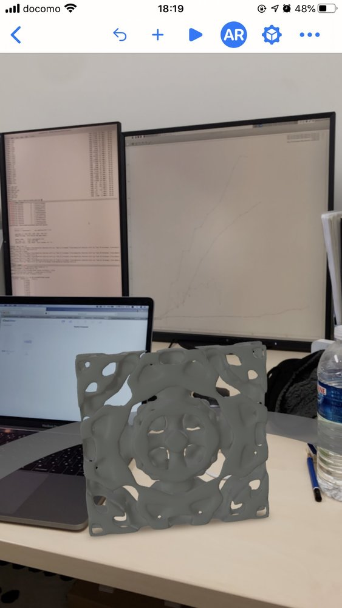

はじめに
飯盛研は、2021 年 4 月に慶應義塾大学理工学部システムデザイン工学科に誕生した新しい研究室です。私たちは、計算力学を基盤とし、工学に現れるさまざまな物理現象をコンピュータ上で扱う数理モデリングや解析を行っています。また、得られたデータを活用して、次世代のデバイスや構造物の最適な形状を設計する「シンセシス」にも取り組んでいます。
計算力学は、現代のものづくりにおける重要な技術です。例えば、自動車や航空機、スマートフォンといった製品では、安全性や耐久性が求められます。製品開発においてコンピュータシミュレーションを活用することで、最適な形状や素材を迅速かつ効率的に導き出すことができます。このアプローチにより、試行錯誤にかかるコストや時間を大幅に削減することができます。
しかし、我々が目指しているのは「安くて早い」だけのものづくりではありません。私たちは、計算力学の限界を押し広げ、これまでの技術では不可能だった新しい性能や機能を持つデバイスの創成に挑んでいます。理論研究が主体ですが、「難しそう」と感じる必要はありません。研究室における教育では論理的に考える力を養うことを特に重視しています。研究を通じて、複雑な現象をシンプルな数理モデルで表現し、解決策を導くスキルを身につけることができます。そして、何よりの醍醐味は自分が考えたアイデアが実際のものづくりに反映される瞬間です。そのような体験を通じて、学生生活の「まとめ」としての研究生活を思いっきり楽しんで欲しいと願っています。
研究紹介
計算力学は（古典的な力学に限らず）様々な物理を対象としますが、特に音や光などの「波」や熱の制御するデバイスの創成と現象の解析に興味を持って研究を進めています。ここでは、最もわかりやすい例として音響レンズ（音を一点に集める構造）の最適設計を紹介します。下図に示すように「手前」から入ってきた音波を「奥」にある観測点に集めるためには、どのような形のものを設計領域 \( D \) の中に配置したら良いでしょうか？

このような設計問題は「音の伝播を表す数理モデル」の解により表される観測点における音の強度が「形」の関数と見做せることを利用すれば（高校生のころから解いていたような）関数の最大化問題を解くことに帰着できます。もちろん、そのような問題を解析的に（＝手で）解くことは難しく、実際にはコンピュータを使って解くことになります。下図の左に我々が構築した方法論を使って設計したレンズを、右に集音の様子を示します。相当に複雑な形をしており、これを「試行錯誤」で導くことはほとんど不可能であること、このようなことを可能にする計算力学が強力であることが理解できるのではないかと思います。これらをさらに発展させるべく、最適設計・波動解析の数理から、（企業との共同研究を通じた）実際のものづくりへの応用まで、幅広く研究を行っています。

さらには、このようにしてデザインした様々なデバイスを augmented reality (AR) を用いて可視化（下図）したり、3D プリンタを用いて「印刷」することも最近では簡単です。様々な（これまでにない機能を持つ新しい）ものをデザインして手に取ることができます。

これまでに音響レンズの他にも色々な波制御デバイスを作ってきました。ここではそれらのうち光学迷彩装置（クローキング）と呼ばれる透明マントのようなもの、屈折率が負に見える(!)メタ表面、地震の P 波と S 波を入れ替えるようなデバイス、音の整流を実現するダイオードが動作する様子を示します（下図）。

研究室生活
研究室に配属されてからの一年間の生活はおおよそ次のような感じです。まだ新しい研究室なので、学生さんと相談しながら柔軟に進めています。
- 2月中旬から5月ごろ: 基本的なことに関する輪講 (週1, 2回程度) を行い、Linux, プログラミング、LaTeX の基本操作などを習得する
- 6月ごろから: 個別の卒論テーマに関する勉強を少しずつ開始
- 10月ごろから: 本格的に卒論
なお、コアタイムのような不合理な制度は採用していません。各自が最も効果的にパフォーマンスを発揮できることを重視しています。研究室では、週に 2 回のミーティングを行い、他大学の先生を交えた勉強会も週に 1 回実施しています。このような環境により、教員だけでなく、研究室の同期や先輩後輩との良質で密なコミュニケーションを通じて研究を進めています。なお、個々人の研究にあたっては高性能な計算機を利用する必要がありますが、研究室で保有している数百GBから数TB（!）のメモリを搭載した20台程度の数値計算専用ワークステーションの他、JHPCNの枠組みでスパコンを利用することもできます。もちろん、良い成果は国際・国内学会や学術雑誌へと積極的に発表しています。四年生の卒論がそのまま国際誌に掲載されることもしばしばです。研究室の学生の成果については、トップページのNewsや業績のページをご覧ください。
大学で研究したテーマにをそのまま職にする学生さんはあまり多くはありませんが、学生時代に研究活動を通じて身に着けた、物事の本質を見抜く力、論理的に思考する力は一生の財産となります。小手先のテクニックだけではなく、物事を深く考える力を身につけて、社会で活躍できる人材へと成長してほしいと願っています。